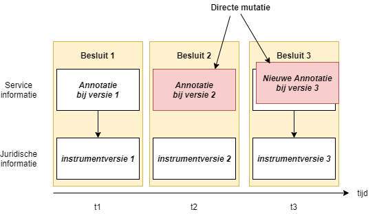

Directe mutatie van annotaties
Omdat een annotatie service-informatie (d.w.z. geen juridische informatie) is, kent STOP een manier om een annotatie te corrigeren zonder dat daar een (officieel) besluit voor nodig is. Een annotatie is één-op-één gekoppeld aan een besluitversie (expressie). Een annotatie wijzigen door een nieuw besluit zou leiden tot een nieuwe expressie in plaats van aanpassing van de originele expressie.
Om annotaties toch te kunnen wijzigen moet gebruik gemaakt worden van een directe mutatie. Een directe mutatie is een aanlevering zonder besluit en deze kan gebruikt worden om annotaties toe te voegen of te wijzigen. Een annotatie wordt gewijzigd door een nieuwe vervangende versie aan te leveren.
Annotatie vervangen
Een initieel, tegelijk met het besluit aangeleverde annotatie, kan in zijn geheel vervangen worden. Ook als initieel geen annotatie is aangeleverd, kan deze later alsnog toegevoegd worden. Zie voorbeeld hieronder: Bij besluit 2 is geen annotatie meegeleverd. De annotatie van besluit 1 was daardoor ook van toepassing voor instrumentversie 2. Door met een directe mutatie alsnog een annotatie aan te leveren voor voor instrumentversie 2, geldt de annotatie van versie 1 niet langer voor versie 2. Bij besluit 3 blijkt foutcorrectie noodzakelijk. De met het besluit meegeleverde annotatie moet gecorrigeerd worden. Door met een directe mutatie een nieuwe vervangende annotatie bij instrumentversie 3 aan te leveren wordt de fout hersteld.

Het is niet mogelijk om annotaties te muteren door alleen een wijziging aan te leveren.
Een annotatie wordt vervangen door het aanleveren van:
ExpressieIdentificatie: om aan te geven op welk besluit- of regelingversie de annotatie betrekking heeft
de nieuwe versie van de annotatie.
Zie voor nadere toelichting op het aanleveren van directe mutaties, de schemadocumentatie van de DirecteMutatie in het Bronhouderkoppelvlak.
Verwerking annotatie correcties
De verwerking van een gecorrigeerde annotatie leidt voor een of meerdere instrumentversies tot nieuwe instanties van de annotatie:
als het een annotatie van een regeling betreft, dan moet bepaald worden voor welke regeling-versies de annotatie aangepast moeten worden, immers één annotatie kan op meerdere versies betrekking hebben als de opvolgende versies geen 'eigen' annotatie hebben. Dus één annotatie correctie kan leiden tot meerdere regeling-versies waarvan de annotatie aangepast wordt. Heeft de opvolgende versie wel een eigen annotatie, dan hoeft alleen de annotatie van de regeling-versie waarop de annotatie betrekking heeft, aangepast te worden.
als het een annotatie van een besluit betreft, dan hoeft alleen de annotatie van betreffend besluit aangepast te worden.
Omdat annotaties geen eigen tijdlijn kennen, komt een gewijzigde annotatie altijd in de plaats van de bestaande annotatie.
Ontvangstdatum annotatie
Aan de hand van de ontvangstdatum van de annotatie, die bij de uitlevering van de annotatie meegegeven moet worden, kan gesignaleerd worden dat er een correctie in de annotatie is doorgevoerd. De oorspronkelijke annotatie is niet meer relevant en zal nooit meer uitgeleverd worden. Alleen door het volgen van de audittrail zal de oorspronkelijke annotatie in geval van nood herleid kunnen worden.